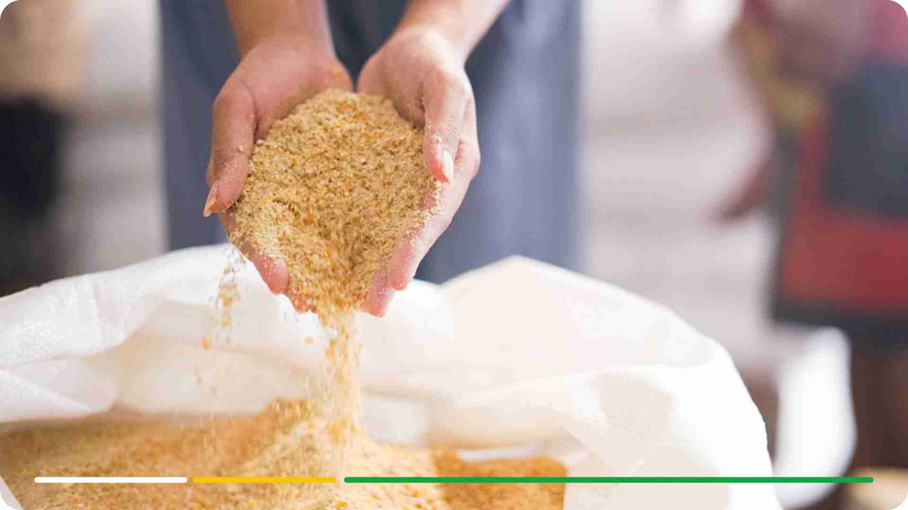

Responsibility
Di Agrosari Farm, kami percaya bahwa kami tidak hanya sekedar berbisnis, kami percaya bahwa kami dapat membuat perubahan. Perjalanan kami bukan hanya tentang pertumbuhan dan profitabilitas; ini tentang memberi kembali, menciptakan dampak positif, dan membina komunitas yang kami banggakan. Berikut ini adalah sekilas tentang inisiatif Tanggung Jawab Sosial Perusahaan (CSR) kami:
Pembagian Telur Secara Rutin kepada Karyawan Kami
Kami menganggap karyawan kami tidak hanya sebagai anggota tim tetapi juga sebagai keluarga besar. Untuk memastikan kesejahteraan mereka, kami telah memperkenalkan pembagian telur secara teratur sebagai bagian dari program diet mereka. Telur merupakan sumber protein dan nutrisi penting yang bergizi, yang berkontribusi terhadap kesehatan dan kebahagiaan tenaga kerja kami yang berharga.
Pembagian Telur kepada Masyarakat Sekitar
Komitmen kami jauh melampaui batas-batas kantor atau peternakan kami. Kami telah memulai program untuk mendistribusikan telur ke masyarakat sekitar. Kami percaya bahwa kami dapat memupuk rasa persatuan dan kesejahteraan di antara para tetangga kami, dengan memastikan bahwa mereka memiliki akses terhadap nutrisi yang baik dari telur.
Dukungan untuk Pembangunan Jalan dan Mushola
Berinvestasi dalam infrastruktur masyarakat merupakan bagian integral dari komitmen CSR kami. Kami telah mendukung pembangunan dan perbaikan jalan dan mushola setempat. Fasilitas-fasilitas penting ini meningkatkan kualitas hidup masyarakat yang tinggal di sekitar kami dan menciptakan komunitas yang lebih aman dan terhubung.
Dukungan untuk Program Mencegah Stunting
Kami sangat berkomitmen terhadap kesehatan dan perkembangan generasi berikutnya. Untuk mengatasi masalah stunting, kami secara aktif mendukung program pencegahan stunting dan program nutrisi. Tujuan kami adalah untuk memberikan anak-anak di komunitas kami awal yang sehat dalam hidup, memastikan perkembangan fisik dan kognitif mereka.
Perjalanan kami dalam tanggung jawab sosial perusahaan mencerminkan keyakinan kami akan kekuatan bisnis untuk membawa perubahan positif. Inisiatif-inisiatif ini bukan sekadar tindakan amal; ini adalah bukti dari nilai-nilai kami, ungkapan rasa terima kasih kami kepada masyarakat, dan janji kami untuk melanjutkan komitmen kami dalam membina masyarakat yang lebih baik, lebih sehat, dan lebih sejahtera.
Di Agrosari Farm, kami berkomitmen untuk memberikan dampak yang berarti yang jauh melampaui operasi kami. Bergabunglah bersama kami dalam membangun masa depan yang lebih cerah dan inklusif, selangkah demi selangkah. Bersama-sama, kita dapat menciptakan dunia yang tidak hanya tentang bisnis, tetapi juga tentang perubahan positif yang nyata dan abadi.
